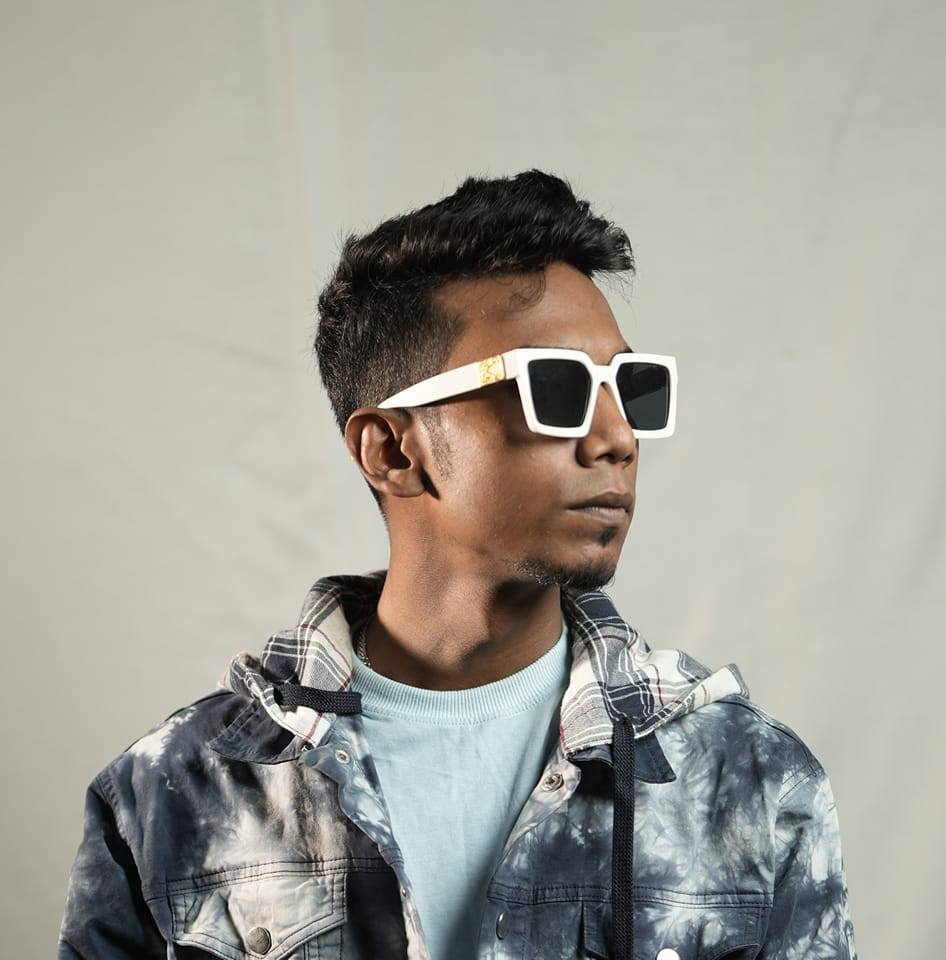

Music Composer | Record Producer | Singer | Rapper
Adib Kabir is a dynamic force in the contemporary South Asian music scene. Since his explosive debut in 2018, he has bridged the gap between traditional melodies and modern urban sounds. From producing chart-topping cinematic scores for superstars like Shakib Khan to collaborating with legends like Ferdouse Wahid, Habib Wahid,Asif Akbar ,Nachiketa ,Dolly Shayantani and many more. Adib’s sonic signature is defined by innovation, precision, and global appeal. Core Expertise Music Production & Arrangement: Crafting high-fidelity soundscapes for Cinema and OTT. . Songwriting & Composition: Creating melodies that resonate across borders. . Vocal Artistry: A versatile performer spanning R&B, Pop, and Hip-Hop (Rap). . Genre Fusion: Specialist in blending Bengali Folk with Urban Electronic and Hip-Hop elements. Career Highlights & Cinematic Success. The Global Breakout (2018): Produced the viral sensation "Bondhurey" (performed by Muza) under the Qinetic Music banner, marking a turning point in the Bengali Urban Diaspora music scene. Cross-Border Cinema: Debuted in the Kolkata (West Bengal) film industry with the track "Tokey Chara" for the movie Network, in collaboration with Raz Dee. The 2025 Megahit: Arranged and produced the musical score for "Nisshash", the standout track from the Shakib Khan starrer movie Borbad. The song became a massive commercial success, dominating radio and digital charts. Iconic Collaborations: * Habib Wahid: Produced the upbeat track "Romantic Lage". Nusrat Faria: Produced the high-glamour pop hit "Habibi". Featured Projects (YouTube & Independent) Explore the diverse discography from the official Adib’s Music channel. 1. Folk-Urban Fusion "Ek Dekhate Monta Kaira Vuila Geli Amare" (feat. Toshiba): A masterclass in reimagining folk melodies with modern synth-pop and rap textures. "Nai TikTok Nai Facebook" (feat. Toshiba): A culturally resonant viral hit showcasing cutting-edge production. 2. Cinematic Ballads & Scores "Nisshash" (Borbad OST): An atmospheric, high-stakes cinematic arrangement that defines the tone of modern Bangladeshi cinema. "Mon Paray 2" (with Jisan Khan Shuvo): A soulful follow-up to a massive hit, emphasizing Adib's ability to handle deep emotional resonance. 3. The Rap & Remix Archive "Hridoy Ekta Ayna" (Rap Mix): A tribute to the legendary Andrew Kishore, blending legacy vocals with contemporary urban poetry. "Premer Somadhi" (Rap Mix): Re-envisioning classics for a new generation of listeners.
Email: adibsmusicofficial@gmail.com